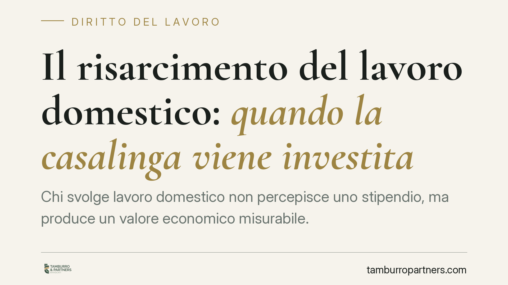

Il risarcimento del lavoro domestico: quando la casalinga viene investita
Chi svolge lavoro domestico non percepisce uno stipendio, ma produce un valore economico misurabile. Quando un sinistro riduce questa capacità, la giurisprudenza riconosce un danno patrimoniale risarcibile. Un orientamento consolidato della Cassazione ha reso ordinario un risarcimento a lungo trascurato, con ricadute pratiche su prova, quantificazione e strategia della richiesta.

Nota di redazione sulla materia
Questo contributo, pur classificato tra i temi di interesse dello studio, non appartiene al diritto del lavoro in senso proprio. La questione rientra nella responsabilità civile e nel risarcimento del danno da circolazione dei veicoli. Il richiamo al "lavoro" riguarda il valore economico dell'attività domestica, non un rapporto di lavoro subordinato o autonomo.
Il caso e il principio
Una persona dedita in via prevalente al lavoro domestico viene investita e riporta lesioni permanenti che riducono la sua capacità di svolgere le attività di cura della casa e della famiglia. Il punto giuridico è semplice ma spesso frainteso: chi non ha reddito da lavoro esterno subisce comunque un danno economico, perché il lavoro domestico ha un valore quantificabile.
Secondo un orientamento consolidato della Corte di Cassazione, la riduzione della capacità di attendere alle mansioni domestiche integra un vero e proprio danno patrimoniale, autonomo rispetto al danno biologico. Gli estremi esatti della singola pronuncia richiamata dalle fonti divulgative andrebbero verificati prima di qualunque citazione ufficiale; ai fini pratici rileva il principio, ormai stabile, e non il precedente isolato.
Inquadramento normativo
La responsabilità del conducente si fonda sull'art. 2054 c.c., che presume la colpa di chi circola con un veicolo salvo prova di aver fatto tutto il possibile per evitare il danno.
Sul piano dei termini, occorre coordinare i commi dell'art. 2947 c.c.: la prescrizione ordinaria del fatto illecito è di cinque anni (comma 1); per il danno da circolazione dei veicoli è di due anni (comma 2); se il fatto costituisce reato, si applica il più lungo termine di prescrizione previsto per il reato stesso (comma 3). La formula sbrigativa "due anni per i sinistri" è quindi imprecisa e va sempre coordinata con l'ipotesi di reato.
Quanto alla qualificazione del danno, la lettura più diffusa lo colloca nel danno patrimoniale futuro: non un semplice "lucro cessante" nel senso stretto di reddito perduto, ma la perdita di un'utilità economica prodotta e destinata a proseguire nel tempo. La sfumatura non è teorica: incide sul modo di provare e liquidare la posta.
La quantificazione avviene in via equitativa ex art. 1226 c.c., quando il danno è certo ma non determinabile in modo preciso. Un parametro talvolta evocato è il "triplo della pensione sociale", che deriva però dall'art. 4 L. 39/1977 ed è pensato in ambito RCA per i redditi non dimostrabili: la sua trasposizione al lavoro domestico è discussa e va usata con cautela, non come regola automatica.
Distinguere le voci di danno
È essenziale tenere separate tre poste:
- danno biologico: la lesione all'integrità psico-fisica, liquidata su base tabellare;
- danno morale: la sofferenza soggettiva conseguente al fatto;
- danno patrimoniale: qui la riduzione della capacità di svolgere il lavoro domestico.
Sovrapporre queste voci porta a richieste mal costruite e facilmente contestabili dalla compagnia assicurativa.
A chi si applica davvero
Un chiarimento contro un frainteso comune: il principio non riguarda solo le donne e non presuppone che la persona sia priva di qualsiasi impiego. Vale anche per chi lavora part-time e dedica il tempo residuo alle mansioni domestiche. Ciò che conta è l'apporto economico effettivo alla gestione familiare, non il genere né lo status formale di "casalinga".
Implicazioni pratiche
Per la persona danneggiata e per la famiglia il risarcimento non si esaurisce nella lesione fisica. Occorre documentare il ruolo domestico e le sue conseguenze economiche, altrimenti la voce patrimoniale rischia di essere ignorata o sottostimata in sede di trattativa e di causa.
Sul piano difensivo, la prova del ruolo svolto prima del sinistro è decisiva: senza di essa la liquidazione equitativa resta ancorata a valori minimi.
Cosa fare in concreto
- Documentate il ruolo domestico: composizione del nucleo, presenza di figli o familiari non autosufficienti, testimonianze sull'organizzazione familiare.
- Richiedete una perizia mirata: la valutazione medico-legale deve accertare non solo il danno biologico, ma la specifica incidenza sulle mansioni domestiche.
- Conservate le spese sostitutive: ricevute di collaboratrici domestiche, assistenza, servizi esterni resi necessari dopo il sinistro.
- Verificate i termini: individuate con precisione il termine di prescrizione applicabile, tenendo conto dell'eventuale rilevanza penale del fatto.
- Distinguete le voci nella richiesta: presentate separatamente danno biologico, morale e patrimoniale, per evitare contestazioni sulla duplicazione.
È opportuno attivarsi tempestivamente, perché la ricostruzione documentale è più solida quando avviene a ridosso dei fatti.
Disclaimer
Contributo informativo a cura di Tamburro & Partners - Avv. Giuseppe Tamburro. Non costituisce parere legale.
Ogni storia di lavoro ha i suoi tempi.
Se gestisci HR e vuoi un confronto su contenzioso, ispezioni o licenziamenti, scrivi allo studio. Ti rispondiamo entro un giorno lavorativo.